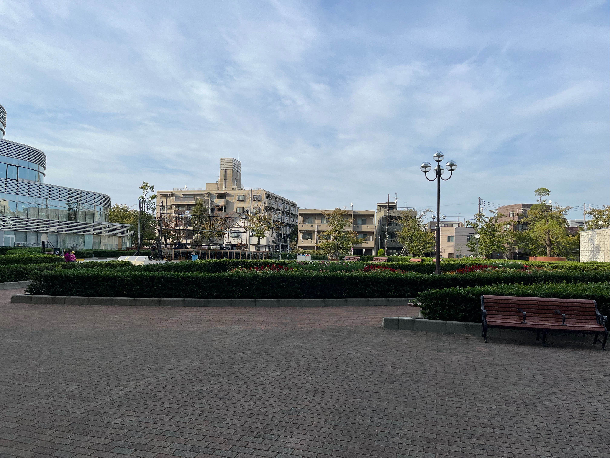

心がほっこりする庭の花壇🌸
数か月おきに花が植え替えられます。
セントラルプラザの風景

10月の花壇の植物の様子

ケイトウや観賞用のトウガラシの花が咲いていて豪華です。
一般的にケイトウと呼ばれるものは、炎のような鮮やかな花色で秋の花壇を彩り、古くから親しまれているなじみのある花です。ニワトリのトサカに似ていることから「鶏頭」と呼ばれ、花房の先端が平たく帯状や扇状に大きく広がり、これがよく目立つのが大きな特徴です。
観賞用トウガラシは、緑や紫、クリーム色から赤や黄、オレンジ色に変化するカラフルな果実を主に観賞しますが、紫や斑入りの葉をもつ品種もあり、果実とあわせて、観賞期間がとても長い植物です。観賞用として流通しますが、やはりトウガラシ（野菜）ですので、非常に辛いものがあります。
トウガラシ属の植物は、南アメリカと北アメリカにかけての熱帯に、20種ほどが分布しています。日本ではトウガラシ属の植物は一年草として扱われますが、原産地では多年草になるものもあります。日本でも5℃程度を保てる温室や沖縄地方では多年草になります。